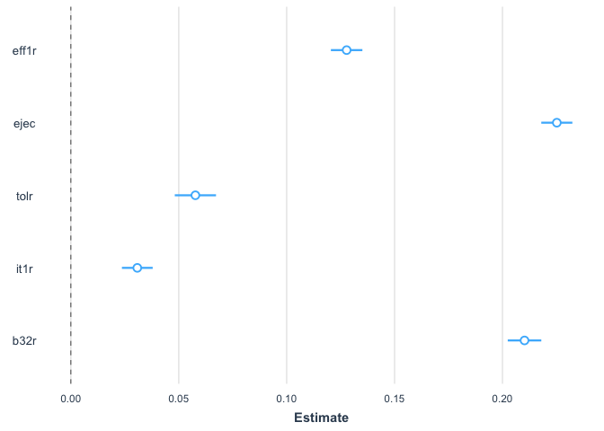

Regresión lineal múltiple con los datos del Barómetro de las Américas
Introducción
En la sección anterior vimos los aspectos básicos del modelo de mínimos cuadrados ordinarios para analizar la relación entre una variable dependiente y una independiente, ambas numéricas. En esta sección se expandirá el análisis, desde un análisis bivariado a un análisis multivariado. Es decir, se usará el método de mínimos cuadrados ordinarios para analizar la relación de una variable dependiente numérica con varias variables independientes.
En esta sección se seguirá replicando los análisis del capítulo “Legitimidad democrática” del reporte El Pulso de la Democracia. En ese capítulo se analiza una medición de apoyo a la democracia.
Sobre la base de datos
Los datos que vamos a usar deben citarse de la siguiente manera: Fuente: Barómetro de las Américas por el Proyecto de Opinión Pública de América Latina (LAPOP), wwww.LapopSurveys.org. Pueden descargar los datos de manera libre aquí.
Se recomienda limpiar el Environment antes de iniciar esta sección. En este documento nuevamente se carga una base de datos en formato RData. Este formato es eficiente en términos de espacio de almacenamiento. Esta base de datos se encuentra alojada en el repositorio“materials_edu” de la cuenta de LAPOP en GitHub. Mediante la librería rio y el comando import se puede importar esta base de datos desde este repositorio, usando el siguiente código.
library(rio)
lapop18 <- import("https://raw.github.com/lapop-central/materials_edu/main/lapop18.RData")
lapop18 <- subset(lapop18, pais<=35)Determinantes del apoyo al sistema
En la sección anterior vimos que la sección del reporte sobre Legitimidad Democrática presenta un modelo de regresión múltiple con los predictores del índice de apoyo al sistema. El Gráfico 2.10 muestra los resultados para 5 variables independientes, aunque el modelo completo incluye controles socioeconómicos y demográficos.

Las 5 variables mostradas en el gráfico son: eficacia externa, tolerancia política, confianza en el ejecutivo, confianza en la comunidad y confianza en el gobierno local.
La base de datos incluye la variable “psar” que mide el apoyo al sistema y que en la sección anterior se procedió a calcular desde las variables originales. Esta variable ya está recodificada en la escala 0-100.
summary(lapop18$psar)## Min. 1st Qu. Median Mean 3rd Qu. Max. NA's
## 0.00 33.33 50.00 48.90 66.67 100.00 327El Gráfico 2.10 muestra la relación entre apoyo al sistema y cinco variables independientes, usadas como predictores de esta variable dependiente. Estas variables son:
Índice de tolerancia política, construida a partir de cuatro variables: D1, D2, D3 y D4. En la base de datos, la variable recodificada se llama “tol1r”.
Eficacia externa (EFF1): “A los que gobiernan el país les interesa lo que piensa la gente como usted- ¿Hasta qué punto está de acuerdo o en desacuerdo con esta frase?”. En la base de datos, la variable recodificada de llama “eff1r”.
Confianza en el ejecutivo (B21A): “¿Hasta qué punto tiene confianza en el presidente/primer ministro?”.
Confianza en el gobierno local (B32): “¿Hasta qué punto tiene usted confianza en su alcaldía?”. En la base de datos, la variable recodificada se llama “b32r”.
Confianza en su comunidad (IT1): “Ahora, hablando de la gente de por aquí, ¿diría que la gente de su comunidad es muy confiable, algo confiable, poco confiable o nada confiable?”. En la base de datos, la variable recodificada de llama “it1r”.
De la misma manera que en la sección anterior, se tiene que calcular la variable de confianza en el ejecutivo, recodificada a una escala de 0 a 100.
lapop18$ejec <- ((lapop18$b21a-1)/6)*100
summary(lapop18$ejec)## Min. 1st Qu. Median Mean 3rd Qu. Max. NA's
## 0.00 0.00 50.00 42.88 66.67 100.00 390Modelo de regresión lineal multivariada
Para evaluar los determinantes del apoyo al sistema se puede calcular un modelo de regresión lineal multivariado. El modelo se calcula con el comando lm donde se indica la variable Y y luego las variables independientes. Cada variable independiente se suma al modelo. Este modelo de guarda en un objeto “modelo1” el que se puede describir con el comando summary.
modelo1 <- lm(psar ~ eff1r + ejec + tolr + it1r + b32r, data=lapop18)
summary(modelo1)##
## Call:
## lm(formula = psar ~ eff1r + ejec + tolr + it1r + b32r, data = lapop18)
##
## Residuals:
## Min 1Q Median 3Q Max
## -80.738 -11.985 0.626 12.249 76.319
##
## Coefficients:
## Estimate Std. Error t value Pr(>|t|)
## (Intercept) 19.063373 0.377552 50.492 <2e-16 ***
## eff1r 0.127794 0.003722 34.331 <2e-16 ***
## ejec 0.225187 0.003673 61.313 <2e-16 ***
## tolr 0.057712 0.004873 11.842 <2e-16 ***
## it1r 0.030792 0.003637 8.465 <2e-16 ***
## b32r 0.210219 0.003966 53.000 <2e-16 ***
## ---
## Signif. codes: 0 '***' 0.001 '**' 0.01 '*' 0.05 '.' 0.1 ' ' 1
##
## Residual standard error: 18.01 on 24767 degrees of freedom
## (3269 observations deleted due to missingness)
## Multiple R-squared: 0.4007, Adjusted R-squared: 0.4006
## F-statistic: 3312 on 5 and 24767 DF, p-value: < 2.2e-16Para presentar los resultados de una manera más ordenada, se pueden usar varias librerías y comandos. En la sección anterior usamos la librería jtools y el comando summs. En esta sección usaremos la librería stargazer y el comando del mismo nombre.
library(stargazer)##
## Please cite as:## Hlavac, Marek (2018). stargazer: Well-Formatted Regression and Summary Statistics Tables.## R package version 5.2.2. https://CRAN.R-project.org/package=stargazerstargazer(modelo1, align=T, type = 'text')##
## ================================================
## Dependent variable:
## ----------------------------
## psar
## ------------------------------------------------
## eff1r 0.128***
## (0.004)
##
## ejec 0.225***
## (0.004)
##
## tolr 0.058***
## (0.005)
##
## it1r 0.031***
## (0.004)
##
## b32r 0.210***
## (0.004)
##
## Constant 19.063***
## (0.378)
##
## ------------------------------------------------
## Observations 24,773
## R2 0.401
## Adjusted R2 0.401
## Residual Std. Error 18.007 (df = 24767)
## F Statistic 3,312.080*** (df = 5; 24767)
## ================================================
## Note: *p<0.1; **p<0.05; ***p<0.01El Gráfico 2.10 muestra los coeficientes de cada variable y el intervalo de confianza al 95% de este estimado. Se incluye una línea vertical en el punto 0. Si un intervalo de confianza cruza esta línea vertical, se puede decir que no tiene una relación estadísticamente significativa con la variable dependiente de apoyo al sistema. Los intervalos de confianza que no cruzan esta línea y que se encuentran a la derecha (izquierda) de esta línea tienen una relación positiva (negativa) con el apoyo al sistema, es decir, cuando aumenta esta variable, el apoyo al sistema promedio aumenta (disminuye). En este ejemplo, las cinco variables son estadísticamente significativas y muestran tienen una relación positiva con el apoyo al sistema. Para aproximar un gráfico similar al mostrado en el reporte, se puede usar la librería jtools y el comando plot_summs.
library(jtools)
plot_summs(modelo1)## Registered S3 methods overwritten by 'broom':
## method from
## tidy.glht jtools
## tidy.summary.glht jtools## Loading required namespace: broom.mixed
Interpretación
Como indica el reporte: “Para la región en su conjunto, estas cinco dimensiones adicionales tienen una relación positiva y significativa con el apoyo al sistema, de acuerdo con el intervalo de confianza al 95%…Esto indica que a medida que aumenta la eficacia externa, la tolerancia política, la confianza en el ejecutivo (presidente), la comunidad y el gobierno local, también lo hace el nivel promedio de apoyo al sistema”.
Antes de analizar la relación de cada variable independiente con la variable dependiente, se puede analizar la validez del modelo en su conjunto.
Validez del modelo
La prueba F sirve para evaluar el modelo en general. Esta prueba tiene como hipótesis:
\[ H0: \beta_1 = \beta_2 = \beta_3 = \beta_4 = \beta_5 = 0 \]
Es decir, la hipótesis nula es que todos los coeficientes en su conjunto son iguales a cero. En nuestro ejemplo, el p-value es menor a 0.05, con lo que se puede rechazar la H0 y afirmar que al menos un coeficiente es diferente de cero. Con esto se concluye que el modelo tiene validez.
Relación entre las variables independientes y la dependiente
Para cada variable independiente se calcula una prueba t. Este test de significancia pone a prueba \(H0: \beta_n =0\). Es decir, si el coeficiente de una variable independiente particular es igual a cero.
Por ejemplo, la variable independiente eficacia externa tiene un coeficiente de 0.128, un estadístico de la prueba t de 34.3 y un t-value asociado de 0.004. De la misma manera que en análisis bivariado, se plantea un valor crítico, convencionalmente de 0.05. Como este t-value es menor de 0.05, se puede rechazar la hipótesis nula y afirmar que el coeficiente es diferente de cero con un 95% de confianza.
La misma conclusión se puede sacar para las otras variables independientes, al presentar un t-value menor a 0.05. Con esto se puede corroborar que las cinco variables independientes son significativas, como indica el reporte.
Dirección de la relación
La dirección de la relación está marcada por el signo del coeficiente de la variable independiente. En nuestro ejemplo, los cinco coeficientes presentan signos positivos, lo que indica una relación directa; es decir, cuando aumenta la variable independiente, aumenta la variable dependiente, en promedio.
Coeficiente de determinación \(R^2\)
El Gráfico 2.10 además de mostrar gráficamente los coeficientes y los intervalos de confianza al 95%, también muestra el dato para el coeficiente de determinación \(R^2\) y para el número de observaciones con los que se calcula el modelo.
En nuestro ejemplo el valor de \(R^2=0.401\). Este valor no es igual al que se presenta en el reporte (0.44) debido a que el modelo de nuestro ejemplo no incluye los controles socioeconómicos y demográficos. El resultado de nuestro ejemplo indica que el modelo reduce un 40.1% el error de usar solamente el promedio para estimar el apoyo al sistema.
Resumen
En esta sección hemos usado el método de mínimos cuadrados para calcular un modelo multivariado. En particular, se ha presentado un modelo con cinco predictores del apoyo al sistema. Este modelo se ha presentado de manera estándar en una tabla de resultados y mediante un gráfico similar al Gráfico 2.10 del reporte.
De acuerdo a los resultados de este modelo multivariado, se ha explicado la validez del modelo, la prueba de inferencia para evaluar la relación entre cada variable independiente con la variable dependiente, la dirección de la relación y la disminución del error mediante el coeficiente de determinación.